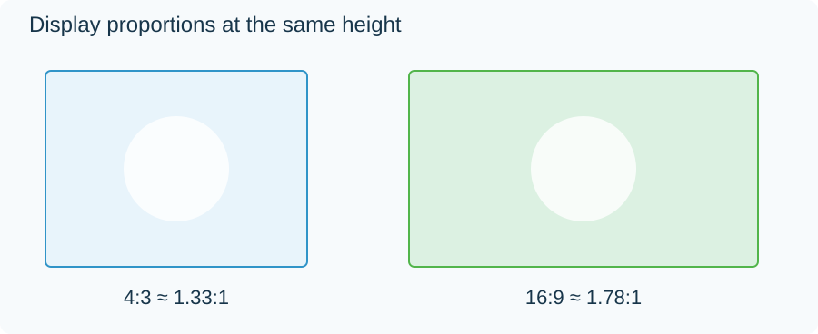

Video Display Aspect Ratio
Display aspect ratio is the intended width-to-height ratio of the displayed video picture.
Display aspect ratio (DAR) is the intended width of a displayed picture divided by its height. A 16:9 picture keeps that shape on a phone, a television, and a projector even though its physical size changes.

Both outlines have the same height. The 16:9 outline is wider.
For an unrotated rectangular frame, with no additional display crop:
DAR = (stored width ÷ stored height) × pixel aspect ratio.
A 1440 × 1080 grid has a stored ratio of 4:3. With pixels intended to appear 4:3 as wide as tall, its display ratio is (4/3) × (4/3) = 16/9. A 1920 × 1080 square-pixel grid arrives at the same display shape by a different route.
Fit a picture into a window
Consider a playback window measuring 900 × 600, a 3:2 shape.
A 16:9 video fitted to its width becomes 900 × 506.25. There are 93.75 unused vertical pixels in the ideal geometry, split into 46.875 above and below. Those spaces are letterbox bars.
A 4:3 video fitted to the same window becomes 800 × 600. It uses the full height and leaves 50 pixels on either side: pillarboxing.
| Source shape | Ideal fitted image in a 900 × 600 window | Unused space |
|---|---|---|
| 16:9 | 900 × 506.25 | Above and below |
| 4:3 | 800 × 600 | Left and right |
These calculations use continuous geometry; an actual pixel display rounds the final placement to its grid.
The same fitting rule explains both outcomes. Uniformly scale the picture until one dimension reaches the window boundary. The other dimension follows from the picture's ratio.
Fill and stretch change different things
To fill the window with the 16:9 video, scale it to 600 pixels high. It becomes approximately 1066.67 pixels wide, so about 83.33 pixels must fall outside each side of the window. The people retain their proportions, but the left and right edges of the composition are lost.
To stretch, change width and height independently until the image is exactly 900 × 600. Every part of the frame remains visible, but a circle becomes an oval because the horizontal and vertical scale factors differ.
These are presentation choices. The file's DAR supplies the shape that fitting or filling starts from. If an anamorphic file has an incorrect pixel aspect ratio, both operations can faithfully fit the wrongly interpreted shape.
The frame and the film inside it
DAR describes the frame being presented. A 1920 × 1080 frame can contain a 2.4:1 film plus black rows above and below. Its frame DAR is 16:9, while its active film ratio is 2.4:1.
That distinction is useful when a playback window shows unexpected extra borders: establish whether it is fitting the film itself or a larger stored rectangle around the film. The geometry then explains which edges will remain visible under fit, fill, or a deliberate crop.